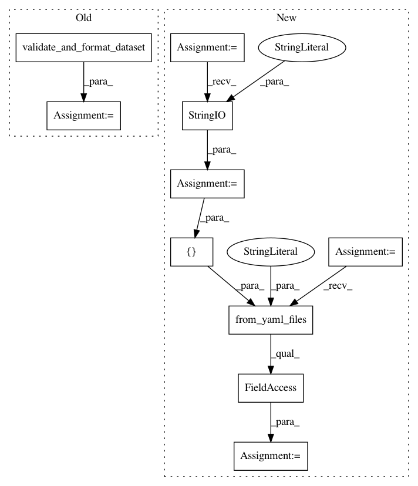

8561f49fad2e0b8125cc0e6f329d43b6b78e6b61,snips_nlu/tests/test_probabilistic_intent_parser.py,TestProbabilisticIntentParser,test_fitting_should_be_reproducible_after_serialization,#TestProbabilisticIntentParser#,483
Before Change
def test_fitting_should_be_reproducible_after_serialization(self):
// Given
dataset = BEVERAGE_DATASET
validated_dataset = validate_and_format_dataset(dataset)
seed1 = 666
seed2 = 42
config = ProbabilisticIntentParserConfig(
After Change
def test_fitting_should_be_reproducible_after_serialization(self):
// Given
dataset_stream = io.StringIO(
---
type: intent
name: MakeTea
utterances:
- make me a [beverage_temperature:Temperature](hot) cup of tea
- make me [number_of_cups:snips/number](five) tea cups
---
type: intent
name: MakeCoffee
utterances:
- make me [number_of_cups:snips/number](one) cup of coffee please
- brew [number_of_cups] cups of coffee)
dataset = Dataset.from_yaml_files("en", [dataset_stream]).json
seed1 = 666
seed2 = 42
config = ProbabilisticIntentParserConfig(
In pattern: SUPERPATTERN
Frequency: 4
Non-data size: 10
Instances
Project Name: snipsco/snips-nlu
Commit Name: 8561f49fad2e0b8125cc0e6f329d43b6b78e6b61
Time: 2019-01-02
Author: adrien.ball@snips.ai
File Name: snips_nlu/tests/test_probabilistic_intent_parser.py
Class Name: TestProbabilisticIntentParser
Method Name: test_fitting_should_be_reproducible_after_serialization
Project Name: snipsco/snips-nlu
Commit Name: 8561f49fad2e0b8125cc0e6f329d43b6b78e6b61
Time: 2019-01-02
Author: adrien.ball@snips.ai
File Name: snips_nlu/tests/test_crf_features.py
Class Name: TestCRFFeatures
Method Name: test_entity_match_factory
Project Name: snipsco/snips-nlu
Commit Name: 3dabf606404484dfef5a498ec30ad824cd427b18
Time: 2018-12-12
Author: adrien.ball@snips.ai
File Name: snips_nlu/tests/test_deterministic_intent_parser.py
Class Name: TestDeterministicIntentParser
Method Name: test_should_parse_intent
Project Name: snipsco/snips-nlu
Commit Name: f1acab811b528be85e2838d813fddb2e5865fea7
Time: 2018-12-04
Author: adrien.ball@snips.ai
File Name: snips_nlu/tests/test_deterministic_intent_parser.py
Class Name: TestDeterministicIntentParser
Method Name: test_should_be_serializable